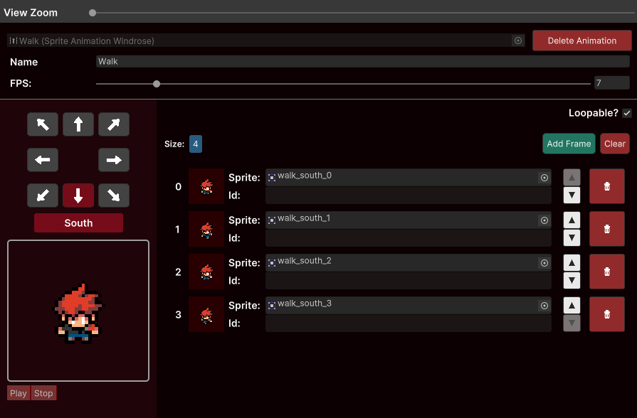

Windrose animation

The windrose animation is a collection of Frame Cycles each representing one of the 8-directional cardinal windrose system directions. Perfect for top-down games.
The main feature of this type of animation is that you will tell the animator to play just one animation and then tell it for wich direction it should set the sprites while animating. Super easy!

Refer to WinroseAnimator in order to understand how you can interact with it through code.